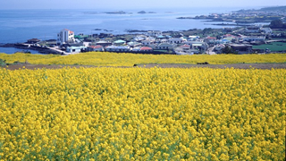
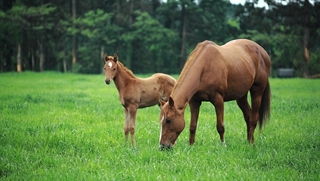

<p>원래 크기의 이미지</p>


<p>width="50%", height="50%"로 지정한 이미지</p>


<p>width="150"으로 지정한 이미지</p>


<figure>
  
  <figcaption>가장 먼저 봄을 맞이하는 제주도</figcaption>
</figure>

<figure>
  
  <figcaption>뜨거운 태양을 닮은 해바라기</figcaption>
</figure>

<figure>
  
  
  
  
  <figcaption>제주도의 사계절</figcaption>
</figure>
